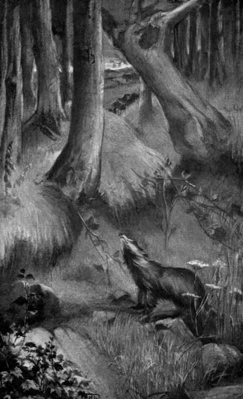

Hillside Trails. Part 2
Description
This section is from the book "Creatures Of The Night: A Book Of Wild Life In Western Britain", by Alfred W. Rees. Also available from Amazon: Creatures Of The Night: A Book Of Wild Life In Western Britain.
Hillside Trails. Part 2
For a while, she was unsuccessful. She happened to frighten them by an impetuous, blustering attack in the rear, from which they easily escaped; thus her difficulties had been increased, since the objects of her aversion became loath to stay in the " earth " after nightfall. But at last, probably more through accident than set purpose, the badger out-manoeuvred the wily foxes.
Lying one evening in the doorway, she heard the vixen, followed by the young foxes, creeping stealthily from the den. Retreating quickly, she barred their exit, thus compelling them to return to their lair; then she took up her position in the neck of the passage, and waited patiently till midnight before commencing her assault. At last, in the dense darkness, she crawled along the winding tunnel, and, directly, the den was the scene of wild confusion and uproar, as its inmates leaped and tumbled over each other in their frantic efforts to escape. For a few minutes, the advent of danger unnerved them; then, as if peculiarly fascinated by the grim, motionless enemy blocking their only outlet, they began an aimless, shuffling dance, baring their teeth and hissing as they lurched from side to side. Their suspense was soon ended. The badger, emerging partly from the passage, gripped one of the cubs by a hind-leg, and dragged it backwards along the passage to the thicket outside, where, after worrying her victim unmercifully, she ended its life by crushing its skull, above the muzzle, into fragments between her teeth.
Once more, but this time furious with the taste of blood, she hurried to the den; and the scene of fear and violence was repeated. Her third visit was futile : the vixen with the other cubs had bolted into the main gallery, and escaped thence to the wood, through an old opening, almost choked with withered leaves, at the back of the "set".
They never returned, but the following spring a strange vixen from the rocks across the valley came to the burrow, gave birth to her young, and, in due course, without loss, was evicted by Brock's relentless mate.
On the night after the death of the fox-cubs, when Brock was led by the she-badger to the spot where her victims lay, he noticed that man's foot-scent was strong on the grass around, and also that his hand-scent lingered on the fur of the slain animal. Often, during the succeeding two months, he was awakened in the day by quick, irregular footsteps overhead; and later, when he climbed from his doorway, and stood motionless, with uplifted nostrils, inhaling each breath of scent, he found that the dreaded signs of man were numerous on the trail, on the near beech-trunk, and even on the mound before the "set." Once, on returning home with his family, he was greatly alarmed to discover that in the night the man had visited his haunts, and that a dog had passed down the galleries and disturbed the bed on which he slept. Henceforward, he used the main opening as an exit only, and invariably entered the "set" by the opening through which the vixen had escaped from his mate, passing, on his way, the mouth of a side-gallery connected with the apartments occupied by his old sire and dam, together with their present family. Eventually, through these precautions, he saved his principal earthworks from destruction.
"HE CLIMBED FROM HIS DOORWAY, AND STOOD MOTIONLESS, WITH UPLIFTED NOSTRILS, INHALING EACH BREATH OF SCENT".
[ To face p. 364].
Had Brock been able to ascertain the meaning of man's frequent visits to the neighbourhood of his dwelling, he would have sorely lamented the killing of the young foxes by the female badger. In the eyes of the Hunt, vulpicide was an unpardonable crime, whether committed by man or beast; and, when the dead fox-cubs were shown to the huntsman, he vowed vengeance on the slayer. Because of a recent exchange, between the two local Hunts, of certain out-lying farms, it happened that this huntsman was not he who in past seasons had tethered his horse near the " set" while he " drew " the cover on foot. The new-comer soon discovered the "earth"; but after a brief examination, from which he concluded, because of the strong taint still lingering, that it was tenanted by a fox, he walked away towards the farm. Fearing a reprimand from the Master if the mysterious slaughter of the foxes could not be explained, he made careful enquiries of the farmers, by whom he was told of the badger and the sheep, as well as of the poacher who had seen Brock's sire in the upland fields two years ago; but he laughed at the first tale, and for want of adequate information paid no heed to the second. Nevertheless, when he again visited the "earth," and, stooping, saw the withered leaves and fern, and detected, not now the scent of a fox, but the scent of half a dozen badgers, his sluggish brain began to move in the right direction. Stories he had heard by the lodge fireside when he was a lad, casual remarks dropped by followers of the Hunt, questions asked him by an inquisitive boy-naturalist—he slowly remembered them all; and then the revealing light dawned on his mind, that no animal but a badger could with ease have broken the limbs of a fox-cub, and cracked the skull as though it were a hazel-nut. Filled with a sense of self-importance, befitting the bearer of a momentous message, the huntsman rode away in the breathless summer twilight to the country house where the Master lived, and presently was shown into the gun-room to wait till dinner was over.
The Master prided himself on his love of every kind of sport; and before the huntsman had finished a long, rambling story of the woodland tragedy he had formed his plans for the punishment of the offender and was writing a brief, urgent letter to a distant friend. As the result, a few days afterwards three little terriers, specially trained for "drawing" a badger, arrived at the Master's house, and were accommodated in a vacant " loose-box" in the stables. Late at night, one of these was introduced to the "set," and from the experiment the Master was led to believe that, though the place, as he surmised, was empty of its usual tenants at the time, it held sure promise of sport for an " off" day, as soon as the otterhounds, now about to hunt in the rivers of the west, had departed from the neighbourhood. Meanwhile, according to his strictest orders, the little terriers were well fed, regularly exercised, and kept from quarrelling, and their coats were carefully brushed and oiled that they might be as fit as fiddles for the eventful "draw".
Continue to: